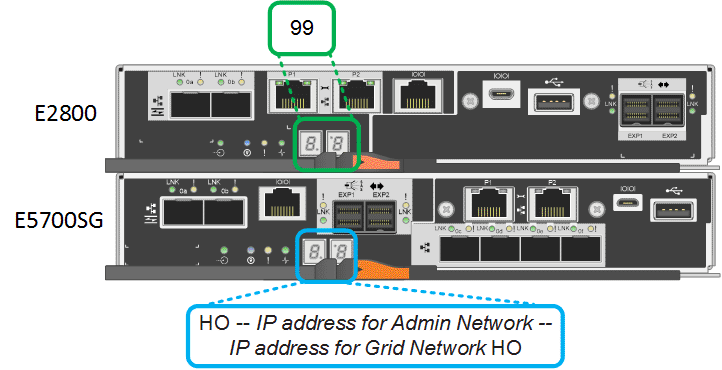
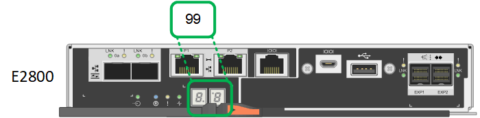

Commencez
Commencez
Afficher les indicateurs d'état et les codes
 Suggérer des modifications
Suggérer des modifications
Les appareils et les contrôleurs comprennent des indicateurs qui vous aident à déterminer l'état des composants de l'appliance.
L'appliance inclut des indicateurs qui vous permettent de déterminer l'état du contrôleur de l'appliance et des deux disques SSD :
Utilisez ces informations pour vous aider "Dépanner l'installation matérielle des systèmes SG100 et SG1000".
- Voyants et boutons de l'appareil
La figure suivante montre les indicateurs d'état et les boutons sur les SG100 et SG1000.

| Légende | Afficher | État |
|---|---|---|
1 |
Bouton d'alimentation |
|
2 |
Bouton de réinitialisation |
Utilisez ce bouton pour effectuer une réinitialisation matérielle du contrôleur. |
3 |
Bouton identifier |
Ce bouton peut être configuré pour clignoter, allumé (continu) ou éteint.
|
4 |
Voyant d'alarme |
|
- Codes de démarrage généraux
Lors du démarrage ou après une réinitialisation matérielle de l'appareil, les événements suivants se produisent :
-
Le contrôleur BMC (Baseboard Management Controller) consigne les codes de la séquence de démarrage, y compris les erreurs qui se produisent.
-
Le bouton d'alimentation s'allume.
-
Si des erreurs se produisent au démarrage, le voyant d'alarme s'allume.
Pour afficher les codes de démarrage et d'erreur, "Accédez à l'interface BMC".
- Indicateurs SSD
La figure suivante montre les voyants des disques SSD du SG100 et du SG1000.

| LED | Afficher | État |
|---|---|---|
1 |
État/défaut du lecteur |
|
2 |
Entraînement actif |
Bleu (clignotant) : accès au lecteur |
Les contrôleurs de l'appareil incluent des indicateurs qui vous aident à déterminer l'état du contrôleur de l'appareil :
Utilisez ces informations pour vous aider "Dépannez l'installation du matériel SG5700".
- Codes d'état de démarrage de l'appliance SG5700
Les affichages à sept segments de chaque contrôleur affichent les codes d'état et d'erreur lors de la mise sous tension de l'appareil.
Le contrôleur E2800 et le contrôleur E5700SG affichent des États et des codes d'erreur différents.
Pour comprendre la signification de ces codes, consultez les ressources suivantes :
| Contrôleur | Référence |
|---|---|
Contrôleur E2800 |
E5700 et E2800 System Monitoring Guide Remarque : les codes répertoriés pour le contrôleur E-Series E5700 ne s'appliquent pas au contrôleur E5700SG de l'appliance. |
Contrôleur E5700SG |
"Indicateurs d'état sur le contrôleur E5700SG" |
-
Pendant le démarrage, surveillez la progression en affichant les codes affichés sur les affichages à sept segments.
-
L'écran à sept segments du contrôleur E2800 affiche la séquence répétée OS, SD,
blankpour indiquer qu'il effectue un traitement en début de journée. -
L'affichage à sept segments du contrôleur E5700SG montre une séquence de codes se terminant par AA et FF.
-
-
Une fois les contrôleurs démarrés, vérifiez que les sept segments affichent la valeur suivante :

Contrôleur Affichage à sept segments Contrôleur E2800
Indique 99, qui est l'ID par défaut d'un tiroir contrôleur E-Series.
Contrôleur E5700SG
Affiche HO, suivie d'une séquence répétée de deux nombres.
HO -- IP address for Admin Network -- IP address for Grid Network HO
Dans la séquence, le premier jeu de chiffres est l'adresse IP attribuée par DHCP pour le port de gestion 1 du contrôleur. Cette adresse est utilisée pour connecter le contrôleur au réseau Admin pour StorageGRID. Le second jeu de chiffres est l'adresse IP attribuée par DHCP utilisée pour connecter l'appareil au réseau de grille pour StorageGRID.
Remarque : si une adresse IP n'a pas pu être attribuée à l'aide de DHCP, 0.0.0.0 s'affiche.
-
Si les affichages à sept segments affichent d'autres valeurs, voir "Dépannage de l'installation matérielle (SG6000 ou SG5700)" et confirmez que vous avez correctement effectué les étapes d'installation. Si vous ne parvenez pas à résoudre le problème, contactez le support technique.
- Voyants d'état sur le contrôleur E5700SG
L'écran à sept segments et les voyants du contrôleur E5700SG indiquent les codes d'état et d'erreur pendant la mise sous tension et l'initialisation du matériel. Vous pouvez utiliser ces affichages pour déterminer l'état et résoudre les erreurs.
Une fois le programme d'installation de l'appliance StorageGRID démarré, il est conseillé de vérifier régulièrement les voyants d'état du contrôleur E5700SG.
La figure suivante présente les voyants d'état du contrôleur E5700SG.

| Légende | Afficher | Description |
|---|---|---|
1 |
LED d'avertissement |
Orange : le contrôleur est défectueux et nécessite l'intervention de l'opérateur, ou le script d'installation est introuvable. OFF : le contrôleur fonctionne normalement. |
2 |
Affichage à sept segments |
Affiche un code de diagnostic Les séquences d'affichage à sept segments permettent de comprendre les erreurs et l'état de fonctionnement de l'appareil. |
3 |
Voyants d'avertissement du port d'extension |
Orange : ces voyants sont toujours orange (aucune liaison établie) car le dispositif n'utilise pas les ports d'extension. |
4 |
Voyants d'état de la liaison du port hôte |
Vert : le lien fonctionne. OFF : le lien ne fonctionne pas. |
5 |
Voyants d'état de la liaison Ethernet |
Vert : un lien est établi. Désactivé : aucun lien n'est établi. |
6 |
LED d'activités Ethernet |
Vert : la liaison entre le port de gestion et le périphérique auquel il est connecté (par exemple, un commutateur Ethernet) est active. Éteint : il n'y a pas de lien entre le contrôleur et le périphérique connecté. Vert clignotant : activité Ethernet. |
- Codes de démarrage généraux
Lors du démarrage ou après une réinitialisation matérielle de l'appareil, les événements suivants se produisent :
-
L'affichage à sept segments sur le contrôleur E5700SG montre une séquence générale de codes qui n'est pas spécifique au contrôleur. La séquence générale se termine par les codes AA et FF.
-
Les codes de démarrage spécifiques au contrôleur E5700SG apparaissent.
- Codes de démarrage du contrôleur E5700SG
Lors d'un démarrage normal de l'appareil, l'écran à sept segments du contrôleur E5700SG affiche les codes suivants dans l'ordre indiqué :
| Code | Indique |
|---|---|
BONJOUR |
Le script de démarrage principal a démarré. |
PP |
Le système vérifie si le FPGA doit être mis à jour. |
HP |
Le système vérifie si le micrologiciel du contrôleur 10/25-GbE doit être mis à jour. |
RB |
Le système redémarre après l'application des mises à jour du firmware. |
FP |
Les vérifications de mise à jour du micrologiciel du sous-système matériel sont terminées. Les services de communication inter-contrôleurs sont en cours de démarrage. |
IL |
Le système attend la connectivité avec le contrôleur E2800 et la synchronisation avec le système d'exploitation SANtricity. Remarque : si cette procédure de démarrage n'est pas en cours au-delà de cette étape, vérifier les connexions entre les deux contrôleurs. |
PC |
Le système recherche les données d'installation StorageGRID existantes. |
HO |
Le programme d'installation de l'appliance StorageGRID est en cours d'exécution. |
HAUTE DISPONIBILITÉ |
StorageGRID est en cours d'exécution. |
- Codes d'erreur du contrôleur E5700SG
Ces codes représentent des conditions d'erreur qui peuvent s'afficher sur le contrôleur E5700SG au démarrage de l'appareil. Des codes hexadécimaux supplémentaires à deux chiffres sont affichés si des erreurs matérielles spécifiques de bas niveau se produisent. Si l'un de ces codes persiste pendant plus d'une seconde ou deux, ou si vous ne parvenez pas à résoudre l'erreur en suivant l'une des procédures de dépannage prescrites, contactez le support technique.
| Code | Indique |
|---|---|
22 |
Aucun enregistrement d'amorçage maître trouvé sur un périphérique d'amorçage. |
23 |
Le disque flash interne n'est pas connecté. |
2A, 2B |
Bus bloqué, impossible de lire les données du démon DIMM. |
40 |
Modules DIMM non valides. |
41 |
Modules DIMM non valides. |
42 |
Échec du test de la mémoire. |
51 |
Échec de lecture du SPD. |
92 à 96 |
Initialisation du bus PCI. |
A0 à A3 |
Initialisation du lecteur SATA. |
AB |
Autre code d'amorçage. |
AE |
Démarrage du système d'exploitation. |
EA |
Échec de la formation DDR4. |
E8 |
Aucune mémoire installée. |
UE |
Le script d'installation est introuvable. |
EP |
L'installation ou la communication avec le contrôleur E2800 est défectueuse. |
Les contrôleurs de l'appliance SG6000 comprennent des indicateurs qui vous aident à déterminer l'état du contrôleur de l'appliance :
Utilisez ces informations pour vous aider "Dépannage de l'installation du SG6000".
- Voyants et boutons d'état sur le contrôleur SG6000-CN
Le contrôleur SG6000-CN comprend des indicateurs qui vous aident à déterminer l'état du contrôleur, y compris les voyants et boutons suivants.
La figure suivante montre les indicateurs d'état et les boutons du contrôleur SG6000-CN.
| Légende | Afficher | Description |
|---|---|---|
1 |
Bouton d'alimentation |
|
2 |
Bouton de réinitialisation |
Aucun indicateur Utilisez ce bouton pour effectuer une réinitialisation matérielle du contrôleur. |
3 |
Bouton identifier |
Ce bouton peut être configuré pour clignoter, allumé (continu) ou éteint. |
4 |
Voyant d'alarme |
|
- Codes de démarrage généraux
Lors du démarrage ou après une réinitialisation matérielle du contrôleur SG6000-CN, les événements suivants se produisent :
-
Le contrôleur BMC (Baseboard Management Controller) consigne les codes de la séquence de démarrage, y compris les erreurs qui se produisent.
-
Le bouton d'alimentation s'allume.
-
Si des erreurs se produisent au démarrage, le voyant d'alarme s'allume.
Pour afficher les codes de démarrage et d'erreur, "Accédez à l'interface BMC".
- Codes d'état de démarrage pour les contrôleurs de stockage SG6000
Chaque contrôleur de stockage dispose d'un affichage à sept segments qui fournit des codes d'état lors de la mise sous tension du contrôleur. Les codes d'état sont identiques pour le contrôleur E2800 et le contrôleur EF570.
Pour obtenir une description de ces codes, consultez les informations de surveillance du système E-Series pour votre type de contrôleur de stockage.
-
Pendant le démarrage, surveillez la progression en affichant les codes affichés sur l'affichage à sept segments pour chaque contrôleur de stockage.
L'affichage à sept segments sur chaque contrôleur de stockage indique la séquence répétée OS, SD,
blankpour indiquer que le contrôleur exécute un traitement en début de journée. -
Une fois les contrôleurs démarrés, vérifiez que chaque contrôleur de stockage indique 99, qui est l'ID par défaut d'un tiroir contrôleur E-Series.
Vérifiez que cette valeur s'affiche sur les deux contrôleurs de stockage, comme illustré dans cet exemple.

-
Si l'un des contrôleurs ou les deux affichent d'autres valeurs, reportez-vous à la section "Dépannage de l'installation matérielle (SG6000 ou SG5700)" et confirmez que vous avez correctement effectué les étapes d'installation. Si vous ne parvenez pas à résoudre le problème, contactez le support technique.
L'appliance inclut des indicateurs qui vous permettent de déterminer l'état du contrôleur de l'appliance et des disques SSD :
Utilisez ces informations pour vous aider "Dépanner l'installation du matériel SG6100".
- Voyants et boutons de l'appareil
La figure suivante montre les voyants et les boutons de l'appareil SGF6112.

| Légende | Afficher | État |
|---|---|---|
1 |
Bouton d'alimentation |
|
2 |
Bouton de réinitialisation |
Utilisez ce bouton pour effectuer une réinitialisation matérielle du contrôleur. |
3 |
Bouton identifier |
A l'aide du contrôleur BMC, ce bouton peut être défini sur clignotant, activé (fixe) ou Désactivé.
|
4 |
Voyant d'état |
|
5 |
PFR |
Ce voyant n'est pas utilisé par l'appareil SGF6112 et reste éteint. |
- Codes de démarrage généraux
Lors du démarrage ou après une réinitialisation matérielle de l'appareil, les événements suivants se produisent :
-
Le contrôleur BMC (Baseboard Management Controller) consigne les codes de la séquence de démarrage, y compris les erreurs qui se produisent.
-
Le bouton d'alimentation s'allume.
-
Si des erreurs se produisent au démarrage, le voyant d'alarme s'allume.
Pour afficher les codes de démarrage et d'erreur, "Accédez à l'interface BMC".
- Indicateurs SSD
La figure suivante montre les voyants des disques SSD de l'appliance SGF6112.
| LED | Afficher | État |
|---|---|---|
1 |
État/défaut du lecteur |
Remarque : si un nouveau disque SSD en fonctionnement est inséré dans un nœud StorageGRID SGF6112 en fonctionnement, les voyants du disque SSD doivent clignoter au début, mais cessent de clignoter dès que le système détermine que le disque dur a suffisamment de capacité et qu'il est fonctionnel. |
2 |
Entraînement actif |
Bleu (clignotant) : accès au lecteur |